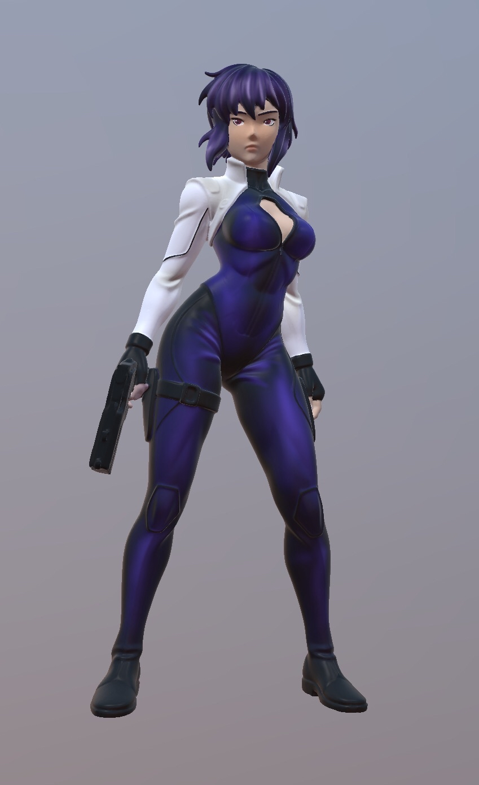
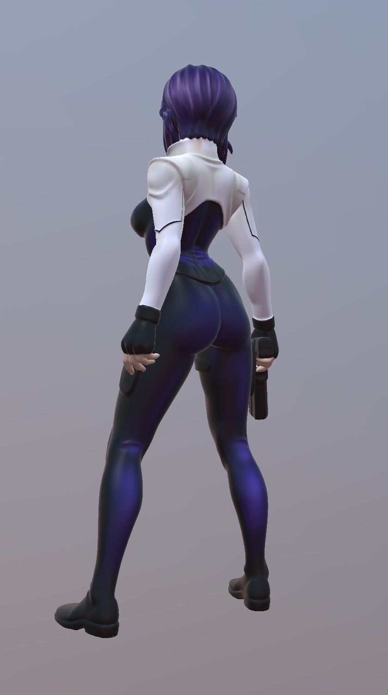

En mars 2026, j'ai collaboré avec cinq camarades sur un projet universitaire consistant à concevoir un site dédié aux œuvres cultes Akira et Ghost in the Shell.
Pour dynamiser la page d'accueil, nous souhaitions intégrer un modèle 3D de Motoko, l'héroïne de Ghost in the Shell. Afin d'optimiser notre temps de production, nous avons choisi d'adapter un modèle existant pour répondre précisément à nos besoins visuels.
L'enjeu était de transformer un modèle complexe en un asset web performant. Après une phase de retopologie et d'optimisation, j'ai choisi une direction artistique adaptée pour la mise en couleur : un style graphique efficace qui concilie impact visuel et rapidité de production.
Mon processus de travail a débuté sur Nomad Sculpt, où j'ai pu épurer le modèle original et retravailler sa topologie pour plus de fluidité. J'ai ensuite basculé sur Procreate pour la phase de peinture, profitant de ses outils de dessin pour donner au personnage une identité visuelle unique.

